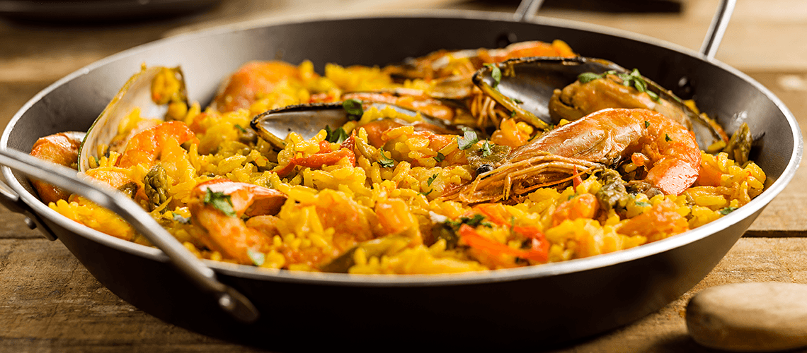

Paella
Receita tradicional espanhola rica em sabores do mar e especiarias.
Ingredientes
- 2 xícaras de arroz tipo bomba ou arbório
- 500g de frutos do mar (lula, camarão, mexilhão)
- 1 peito de frango em cubos
- 100g de ervilhas
- 1 pimentão vermelho em tiras
- 1 cebola picada
- 2 dentes de alho picados
- 1 tomate sem pele picado
- 1 colher de chá de açafrão
- Caldo de legumes (aproximadamente 4 xícaras)
- Sal, azeite e pimenta a gosto
- Limão para servir
Modo de Preparo
- Aqueça azeite em uma paellera ou frigideira larga e refogue o frango até dourar. Reserve.
- Refogue a cebola, alho e pimentão. Acrescente o tomate e o açafrão.
- Adicione o arroz e misture bem por 2 minutos.
- Despeje o caldo de legumes quente aos poucos, mexendo levemente.
- Acrescente o frango, os frutos do mar e as ervilhas.
- Cozinhe por cerca de 20 minutos em fogo médio até o arroz ficar macio e a água quase secar.
- Deixe descansar por 5 minutos, decore com limão e sirva.